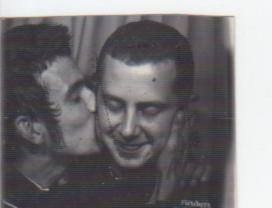

Qui 7"+ Tour, MONDO MPLS zine, etc.
March 5, 2015
Qui - "The Grace of a Ballerina" b/w "Jackie" [young-049] Limited maroon vinyl!! (Additional percussion by Dale Crover, Produced by Deaf Nephews, photos and layout by David Yow.)
Blood of the Young couldn't be happier to work with these talented fellows. With a slew of 7" releases just out or upcoming, on labels we love such as Three.One.G, Joyful Noise, and Cobraside; as well as past full lengths on Ipecac, Cobraside, and Heart of a Champion, these guys are prolific and we're honored to have been asked to release this 7". Official street date being 03/17, the day their tour starts in Brooklyn with Sebadoh, and continues long into April. Do not miss this tour, you'll be sorely disappointed!
Also, for you people in the twin cities; mark your calendars or clear what you've got on 04/03/15. Qui will be in town for a 7" release party / show at Grumpty's Downtown with Gay Witch Abortion and STNNNG. Quite a bill. Come on down, rock out, get a 7" and maybe even find one of the EXTREMELY limited "blood" editions of the 7" limited to 6. 3 available at the show, 3 via mailorder. If you don't know what the "blood" editions are; think of a crazy label owner, some test pressings, and a razor blade. That's art, baby.
Available now in the online store, ships 03/17 - 03/24.
MONDO MPLS - zine [young-047]
Buckle up and batten down the hatches to prepare your pretty little eyes for the hottest underground publication this side of skid row! MONDO MPLS delivers the rawest and raddest compilation of 100% TRUE stories including drug addled get rich quick schemes, high flying near death experiences, barely legal exploits in the sex industry along with some of the finest underground comics, photographs from renowned scum-bags and a delightful recipe for gluten free cookies!
This little bundle of joy comes jam packed at 64 full color pages lovingly hand folded by Mr. Mondo himself. And since we love you oh so much, we decided to release it with two collectible covers in an array of colors! So act fast before these sell out or are banned by the squares!
(Also here's the flier for the zine release... it's already happened, but Mr. Mondo looks so dope in this pic we just had to share it! :)
There are a lot of exciting developments, release wise and other, upcoming. Stick with us here on on facebook and we'll keep you up to date!
hit it or quit it. with love, nick / blood of the young
young-048 + young-047
January 18, 2015
We are very excited to say Blood of the Young Records & Press is split releasing the Rifle Diet - 'No Solace' LP [young-048] with Profane Existence. Available on Saturday at the release show at the Dogplex!! Don't miss this one, you'll regret it.
So very, very proud of this one. First press of 500, get em while they're hot!
Next up, from the genius that is Dan Hoffstrom, comes the first issue of MONDO MPLS. [young-047] Release date is Valentine's Day. Here's how Dan described it:
Pluck out and polish your eyeballs to prepare for an experience like no other! MONDO MPLS delivers a bodacious buffet served up with unbelievably true stories of the local sex industry, drug addled get rich schemes, a self help guide to radicality along with some of the finest photographs and illustrations from Minneapolis' brightest and boldest of brains!
This publication comes jam packed with 64 full color pages including interactive content and mail in prizes as well as a digital download with bonus pages, saddle stitch bound with custom chrome purple staples in not one but two collectible covers in an array of colors!
This baby drops on Valentines Day and will have a release party the next day in MPLS, so keep your eyes peeled for more updates and be sure to get it while it's hot and bothered!
Exciting new announcements to come soon.
hugs not drugs,
love nick / blood of the young
Tickle Torture Release & NYE Show!
December 29, 2014
We couldn't be prouder to bring you this one...

Tickle Torture - "Spectrophilia" + "Spiritual Machete" LP+7"/DL (young-045) drops officially on 12-31-14 in the 7th St. Entry at Here's a link to the VINYL in the online store.
This vinyl is in fact a 12" LP and a 7" to get all the songs on there, plus you get that digital download goodness as to be expected. Same price as a normal LP because we love you. Maybe even a bonus track on the DL...
The cd version (young-045CD) is also available in the online store.
Sex Funk Magik.
love nick / blood of the young
Vi Som Älskade Varandra Så Mycket - DEN SORGLIGASTE MUSIKEN I VÄRLDEN LP Out Now!
October 7, 2014
Smashing genres, out of Stockholm, Sweden comes this burning hot piece of wax. Ex- Khayembii Communique, Song of Zarathustra, Neighbors and a ton of Swedish bands; this band defies genre and delivers one of the most amazing 8 song debut LPs you'll hear this year. The best of 90s hardcore, played by gentleman who have been honing their craft a lot longer than that, mashed with Godspeed You Black Emperor like crescendos. If there is one record this year you need to own, one record that exemplifies pure, raw emotion at it's purest, this is it.
First press on limited blood red vinyl. Split release with Zegema Beach Records. If you're in Canada, order from Zegema Beach.
We could not be prouder to bring this to you.
with love,
Nick / Blood of the Young
Tickle Torture on Vice Again + Neighbors show tomorrow night
September 10, 2014
Tickle Torture can't seem to be stopped right now. After a sold-the-fuck-out 7th St. Entry show, with the illustrious Pony Bwoy opening, and hand made "massage oil" for sale at the merch table; here, the day after the street date and four days after the show, another Noisey feature. This time showcasing the second video from "Spectrophilia" - "You're Gonna Be My Baby" - stay tuned!
Neighbors are playing tomorrow night at Cameo. Not a show to be missed. If you're in New York, I know where you should be tomorrow night.
hugs and kisses, swings and misses - love nick and all at Blood of the Young
Happy Tickle Torture release day!
September 9, 2014
First of all, for you digital only peeps -
https://tickletorture.bandcamp.com/
https://soundcloud.com/elliottk/sets/spectrophilia/
iTunes is coming, the approval process seemingly taking longer because of the cover.
CDs are in the webstore.
Vinyl is coming, most definitely. We'll keep you updated re: that.
Also, if you weren't there on Saturday night, you missed this:
In other news, you really ought to head out to Icehouse this evening if you're in the twin cities. White Boyfriend will be performing with Father You See Queen, who will be releasing their s/t LP/DL [young-046] this winter. Check out their site, it's quite nice and may reveal some details of their LP, if you're smart.
hugs not drugs,
love nick / blood of the young
Tickle Torture - "Spectrophilia" E.P. [young-045] Release Show Tonight!
September 6, 2014
Tonight, Saturday 09/06 in the 7th St. Entry, be there for the Tickle Torture release show. It's gonna be nuts. If you haven't yet gotten tickets, I'd highly suggest it as it's getting close to sold out now.

The official street date is 09/09/14. Come on down to the show and get your copy early. King Tickle has informed me of some highly dubious entertainment for the evening. I would not miss this. Pony Bwoy are opening, so crazier things get.
Come party and celebrate the release of the E.P. We're proud to be doing it.
hugs,
nick / blood of the young
RIP Andrew Richardson
September 5, 2014
Andrew Richardson, The Book of Dead Names tour
You'll notice I'm falling apart. This update relates to the death of Andrew Richardson. He was on so many records on this label it's hard to count. Anyway, I normally hold my updates to a certain standard of non-insanity, i.e., they don't make me sound crazy. But this right here is literally the Blood of the Young... and I can't believe we lost him.
We lost a good one. Andy Richardson and I go back. Back to his old bands that pressed 7"s in high school and I thought it was so fucking amazing. He inspired me, a lot, to do the label. He showed me that it was possible. We went to the same high school, as did the Khayembii Communique guys, and my webmaster who is updating this right now, and so many of our friends and other scene people it's weird. So many of us go back to being teenagers.
Andy played guitar in The Crush, who did a 7", a full length, and a split 7" on Blood of the Young before getting signed to Billy Joe's Adeline Records and putting out their second full length via Adeline. They did well and toured the damn UK with Green Day for fuck's sake. He was also in The Book of Dead Names, who I thought would go on forever. But this time it really is the end. Though the second LP is close to done, and discussions among band members would seem to confirm we WILL finish this and get the few final tweaks Andy wanted done, and done the way he wanted them done. More to come on that.
Please help out with the memorial fund if you can, it's to benefit his wife and 3 year old child, Bronson.
From everyone here at Blood of the Young (which, honestly, is really just a few people) we wish Moe and Bronson the best, and want them to know that they are in our thoughts. If the world wide web does stick around for a while, when you're older Bronson; just so you know your dad was pretty fucking cool. One of the coolest ever.
Recording the new Book of Dead Names LP
Skott Free playing Tanner's garage

The Book of Dead Names, St. Louis
The Infinity Dive and Ereshkigal on tour
The Book of Dead Names
The Book of Dead Names, somewhere in the US, 1999/2000

With Book of Dead Names roadie and friend Chris Steeber
The Crush in Chicago, 2001
Dr. Andrew Richardson in the studio, 2010
Andrew Richardson
The Crush on Tour/Atlanta '87

The Book of Dead Names, November 12th 2012
Andrew Richardson with his sister Kate Richardson, August 31 2014
Tickle Torture - "You're Gonna Be My Baby" Video Premier
August 27, 2014
Today we bring you the second video/single from Tickle Torture's upcoming "Spectrophilia" EP (12"+DL/CD/Digi) [young-045 / young-045cd]. This release drops 09-09-14, with a release show in the 7th St. Entry on Saturday 09-06-14. If you want it early, head to the show!
Without further ado, here is the second song off of the EP, "You're Gonna Be My Baby".
We're so very proud to be doing this release. Enjoy the 2nd song and come out to the show on 09-06. You will not regret it, I assure you. This show is going to be nuts.
More to come, including the news of a release date for the Vi Som Älskade Varandra Så Mycket LP, following soon after Tickle Torture.
Also, a reminder not to miss Blackthorne killing it over at FUCK MOUNTAIN on Friday night. If you need the address, get in touch with Nick or Travis and as always, respect the space.
love nick / blood of the young
Neighbors - 'Failure' LP+DL Available Now!
August 26, 2014
It's a great day here at Blood of the Young. Not only can we tell you that the new in the webstore and available for purchase, but also that you can find it at find independent record stores around Minneapolis / St. Paul, and soon much, much further out into the world.
Beyond that, behold the incredible power that lies within the upcoming Father You See Queen's s/t LP/DL. [young-046] You can find the first track to be revealed to the world over on the Blood of the Young YouTube page.
More exciting news tomorrow!
With love,
Nick / Blood of the Young
Tickle Torture Drops First Video / Single From Spectrophilia EP!
July 29, 2014
Head on over to Noisey and check out the first video / single from Tickle Torture's upcoming EP, "Spectrophilia" [young-045.] Peep the video and get ready, this release is a scorcher.
This will be released both as a LP+DL / CD / Digi. We're very proud to be involved in this one.
Neighbors - 'Failure' [young-043] LP+DL have arrived, and hit the streets officially 08-19-14, with a release show at Glasslands on the preceding Saturday 08-16-14. If you're in New York, I know where you should be on 08-16. This record is really good.
Vi Som Älskade Varandra Så Mycket — “Den Sorgligaste Musiken I Världen” LP+DL [young-041] is at the plant. Waiting on test pressings. This record is a split release with Zegema Beach Records from Canada. Blood red vinyl, limited to 1st press only. This record is epic. Ex- Khayembii Communique, etc. More to come on this one.
More upcoming news. Hugs not drugs,
love nick / blood of the young / the whole staff
Tickle Torture EP
July 8, 2014
Two days, two extremely exciting announcements.
Blood of the Young is overjoyed to announce we will be bringing you the first physical Tickle Torture release. “Spectrophilia” [young-045 / young-045cd] is accompanied by the first, digital only Tickle Torture e.p. “Spiritual Machete“ as well. One package, one price, all sexy.
If you've been living under a rock, who is Tickle Torture you ask?
Tickle Torture is the sex-pop soundtrack for a new generation of freaks. His first EP, “Spiritual Machete” (2012), felt like catching Justin Timberlake and Prince making out in a dumpster full of broken synthesizers. Equal parts electro-funk and sleaze, “Spectrophilia” has further expanded this sound, incorporating the influences of trashy disco, post-Yeezus experimental hip-hop production sensibilities, and 80’s synth drenched R&B classics to create a one-of-a-kind maximalist assault. Feeding on the sweaty energy left from the funk dynasty of his home base in Minneapolis, one man producer, composer, engineer Elliott Kozel created these tracks over the course of the past year. This do-everything-yourself aesthetic expands into every aspect of the project, from creating his own masks and costumes, to styling and producing many of his own music videos. His sexual, chaotic live shows are half-party, half-performance art, and include a full live band, a team of backup dancers, an arsenal of confetti cannons, strobe lights and video projections.
In the local scene, Tickle Torture has expanded into production work for some of Minneapolis’ finest talents, including Caroline Smith (with whom he co-wrote the nasty ”Fuck Me With The Lights On”) as well as the international rising star Lizzo. Album track “Ready for Love” features local R&B luminary Ashley Dubose, who recently reached a national audience via NBC’s The Voice, melding his experimental electronics and her Neo-Soul leanings into a slinky yet aggressive club banger.
With this 5 song EP and 4 music videos set to launch this fall, Tickle Torture is poised to deliver his raw, sexual vision of the future of dance music.
For now, enjoy the video for “Forgotten” off of “Spiritual Machete” and get ready for the first single and video from “Spectrophilia” to drop in the coming weeks. We'll make sure to let you know!
Father You See Queen LP
July 7, 2014
In highly exciting news here at Blood of the Young, we are ecstatic to announce we will be bringing you Father You See Queen's self-titled LP, upcoming this winter. [young-046]
As a lovely taste of the band, enjoy this exquisite 3D enabled video for “Oceans” off of their “47” E.P. below, premiered over at The Current earlier today:
The LP is amazing. We're listening to is a lot here at BOTY HQ. Trust us when we say, you will be as well.
More news to come rather soon. Until then...
Nick / Blood of the Young
Interview With Melting Wizard, Track Free Through End of Month
May 30, 2014
So we opted to keep Croix Clayton’s “Melting Wizard” track (young-042dl) free until the end of the month. Celebrate 15 years with us. Get on it if you want the track free, and now. It’s really, really good. Haunting. Download it here:
And seeing as we’re talking about Croix, check out the following interview. Really, really well done by Jeremy Woodson. Read it here.
In other news, Neighbors have premiered the third video from ‘Failure’ (digital out by the band already, LP/DL up next from us here. [young-043] ) Check out this awesome video, for yet another killer song off of this monumental album.
More news coming, and thanks for sticking around. We’d tell you more if we could, but cannot yet. Big announcements coming.
Hugs not drugs,
love nick / the rest of the blood of the young staff
Neighbors Interview and Blackthorne at the Triple Rock TONIGHT!
May 9, 2014
The nice people at ThrdCoast just posted an interview with Neighbors — whom you may recall we are doing the LP/DL of 'Failure' (young-043) for. Check it out!
And if you're in the Twin Cities, you want to be at the Triple Rock Social Club Tonight. Blackthorne. Blood, Sweat and Beards (final show.) Anchor Windlass. Nightosaur. Be there or be [].
And don't forget that Melting Wizard is a free download until the 15th!
Celebrating 15 Years With 4 New Releases and a New Website!
May 1, 2014
It’s been 15 years, today, since we first started dripping blood in the form of music, drained from the artists we’ve been lucky enough to work with over the years. A lot has happened in that time, and since being back (we came back the day the world was supposed to end, 12/21/12) we’ve dropped three releases we’re incredibly proud of: Croix Clayton’s novella The Gate of Xibalba, or, The White Road (young-037) , Marijuana Deathsquads’ opus The River 12” (young-038), and Blackthorne’s debut Necroshark 7” e.p. (young-039). We’re incredibly proud of all of these releases, and have more stuff headed your way. Up first, right now, available for free for 15 days to celebrate 15 years since the first release (The Khayembii Communique s/t 7”)…
Melting Wizard
Meet Melting Wizard. Taste the first Melting Wizard track (young-042dl) for free, and help us celebrate.
Neighbors

Next up, Neighbors are a killer band from Brooklyn, and you really ought to check them out. We’re doing the vinyl of their new album ‘Failure’ (young-043) released digitally on 03/25. Street date to be announced. To get an idea, here are the first two videos off of their new album:
Neighbors - “Wild Enough” Video (Spin)
Neighbors – “Last Of A Kind” Video (Stereogum Premiere)
They’ve just charted #132 on the CMJ top 200 which is pretty cool.
Post these two releases, two more are coming that are fleshed out enough we’ll mention them at this point:
Vi Som Älskade Varandra Så Mycket
VSAVSM — or Vi Som Älskade Varandra Så Mycket — are an amazing hardcore band from Stockholm, Sweden. We are releasing their first LP, “Den Sorgligaste Musiken I Världen” (young-041). Ex-members of The Khayembii Comminuque, Song Of Zarathustra, Cardinal Sin, Ruh, Interlace, Neighbors, Speemarket Avenue, Young Team, and The Comedy.
L.I.V.
Last, but most certainly not least, we have L.I.V., or Live Instructional Video. We’re doing their debut release, a cassette/DL entitled “Lazerjuice” (young-044cs.) These guys will entice you to get on their spaceship if you’re not careful.
If you’re in the twin cities, don’t miss their Art-A-Whirl show, it’s going to be quite a show.
Cheers, and here’s to 15 years of Blood. More releases are coming, and yes we will talk about them when we can. Oh and yes, there is most definitely a second Book of Dead Names LP coming. (young-040) We’ll let you know more on that when we can.
Blackthorne - “Necroshark” 7" Out Now in Our Online Store
The
Blackthorne - “Necroshark” 7" release & December residency at Grumpy’s Downtown, Marijuana Deathsquads come home after a killer tour, etc.
Blackthorne — “Necroshark” 7” ep [young-039] available first on 12/07/13 at their first saturday residency show, with a proper Tuesday release date of 12/10/13 for stores and distributors, and in our online store. This 7" ep includes a digital download code, they are all the rage you know kids. Available on iTunes for you people lacking record players (Hello, Mcfly?) on 12/16/13.
May get all dorky on ya and do a show edition w/ test pressings *limited* to like 8. Record geeks just giving ya a heads up. One for each track on this *INSANELY KILLER* 7" that Blood of the Young is proud to bring you. More details on that.
Blackthorne will continue throughout the month of December with their Saturday residency at Grumpy’s DT.
Blackthorne’s 2nd release will be on a split 12” w/ STNNNG, Blacklisters, & Hey Colussus on Learning Curve Records. Nice. Looking forward to hearing that one, sounds like a pretty hot piece of wax to me!
Check out the new logo as well... just like the band, the logo keeps getting tougher.

I’m pretty sure we’ve mentioned the also available on iTunes] or Croix Clayton's incredible novel [young-037].. so check out the online store and buy some blood. We'll keep it flowing if you do... well, and if you don't, because it's our passion.
Thanks to everyone who should be thanked, you all know who you are.
Check out new mpls band TYTEJEFF - with Jeff Allen formerly of the Plastic Constellations, Blood of the Young alums as some of you may recall, after split releasing their first full length back in the day with Tom over at Modern-Radio.
Rock over Chicago (or mpls as the case may be)
nick / blood of the young
p.s. we've got some tricks up our sleeve. details soon(ish) regarding some upcoming releases we're damn proud of. and won't talk more about until...
Marijuana Deathsquads — “The River” 12" Now Available on iTunes
Quick update: Marijuana Deathsquads — “The River” 12"/DL is now available on iTunes. Head to this link if you're an mp3 only non vinyl person. That’s that for now, more news to come. Go see Marijuana Deathsquads as they cross the country with Poliça, you won’t regret it.
Marijuana Deathsquads — “The River” 12" Out Now in Our Online Store
Interested stores and distributors email distro@blood-of-the-young.com.
Also, look for Marijuana Deathsquads on tour for the next month with Poliça. They are all sure to be killer shows, starting with Halloween in Milwaukee, sure to be a night to remember!
hugs not drugs,
blood of the young
Marijuana Deathsquads — “The River” 12" Street Date 10/29/13 Mailorder available now!
The street date for Marijuana Deathsquads — “The River” 12" / digi release [young-038] is now officially 10/29/13. This makes the third week in a row Marijuana Deathsquads has dropped a release, and is two days prior to their first show of a month long tour with Poliça. Again, distros and stores etc interested in obtaining copies, email distro@blood-of-the-young.com. Mailorder is available now: “The River” gatefold 12" first press edition of 1100 is $15 (if you buy direct from me or my mailorder guy in town) or $19 postage paid. (Yeah, USPS postage rates really do suck now.) They will be in local independent record stores in the twin cities in the next few days. For you non record player owning people, it will be available on Itunes and other digital retailers as well.
Marijuana Deathsquads — “The River” One-sheet PDF, 2.6MB
Re-stock for Croix Clayton’s “THE GATE OF XIBALBA, OR, THE WHITE ROAD” novel [young-037] is here, and again these copies are the last of the first editions. Pick up the book at fine local book and record stores, and of course via mailorder and distro. $15 in person, $18 postage paid. The first edition is of 200, so you might want to get on this if you want a first edition.
Blackthorne — “Necroshark” 7" [young-039] is up next. Some of the best thrash / power violence / metal around. The artwork is coming along beautifully. More details to be announced when we have them. Don't miss them tonight @ Neisen's.
More to come from the soon to be even colder confines of Minneapolis.
with love,
Blood of the Young